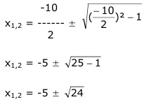
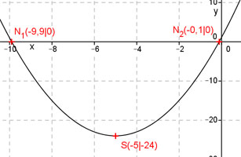

Aufgabe 39 Welche Koordinaten haben der Scheitelpunkt S und die Nullstellen N der folgenden Funktion? y = x2 + 10x + 1 Ermitteln der Scheitelpunktform: Quadratische Ergänzung: y = x2 + 10x + 25 – 25 + 1 mit x2 + 10x + 25 = (x + 5)2 y = (x + 5)2 - 24 S abgelesen: S(-5|-24) Nullstellen: y = 0 0 = x2 + 10x + 1 p. q – Formel : p = 10 ; q = 1  x1,2 = -5 ± 4,9 x1 = -5 – 4,9 = -9,9 x2 = -5 + 4,9 = -0,1 N1(-9,9|0) ; N2(-0,1|0) 